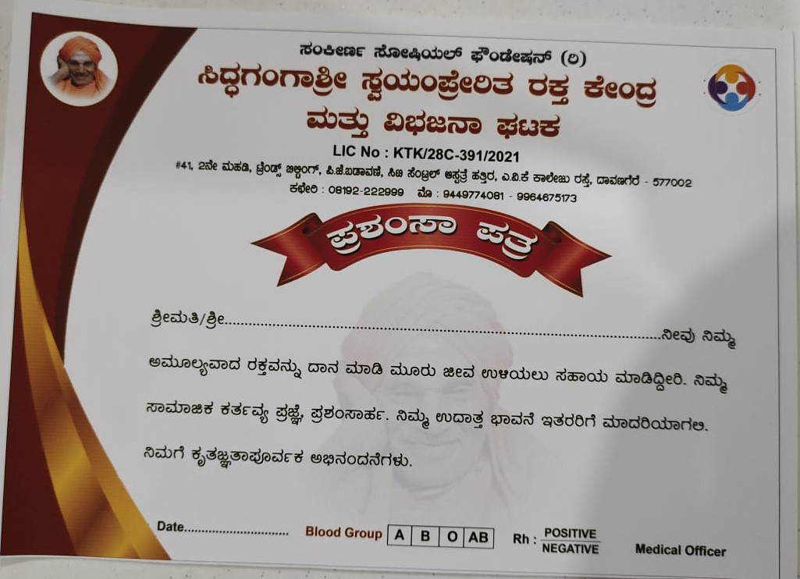

Every donor receives a certificate of appreciation. This certificate is not only a token of gratitude but also holds a valuable benefit. With this certificate, donors can avail free blood in emergencies for the next six months. It acts as a lifeline in critical situations, providing quick access to the blood they might need.
Thank you for being a part of Sankeerana Blood Donation Organization and contributing to the noble cause of saving lives through blood donation!
